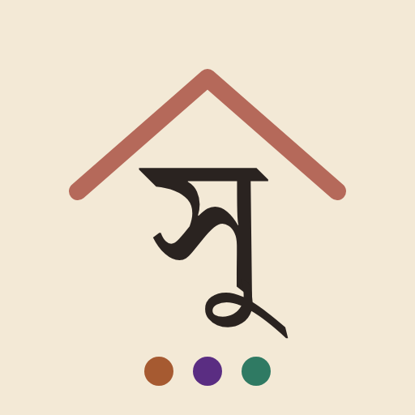
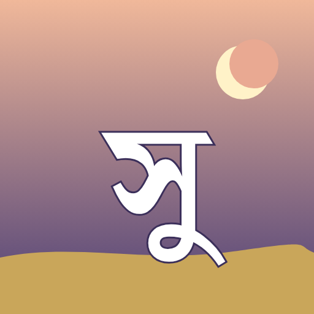
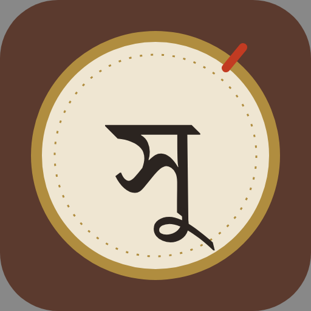

Phase 1: three click-through mockups on the real data of the three sites. Serve a root that has /Surghor, /Anandadhara, /Raagmala and /Piano side by side.



Test overrides on any concept: ?h=19 (hour), ?season=Barsha (Grishma · Barsha · Sharat · Hemanta · Sheet · Basanta), ?theme=dark. Screenshots in shots/; icons in icons.html.